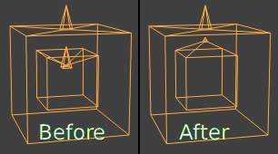
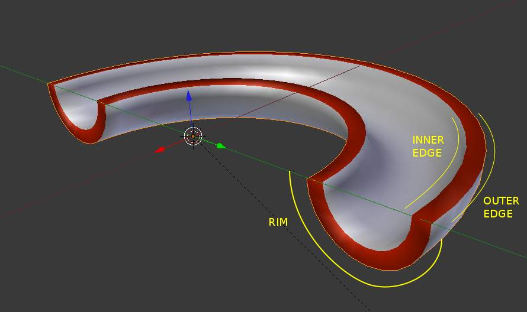

Solidify Modifier¶
The Solidify modifier takes the surface of any mesh and adds depth to it.
Options¶
Solidify Modifier.
- Thickness
- The depth to be solidified.
- Offset
- A value between (-1 to 1) to locate the solidified output inside or outside the original mesh. Set to 0.0, the solidified output will be centered on the original mesh.
- Clamp
A value between (0 to 2) to clamp offsets to avoid self intersection.
Clamp Offset.
- Vertex Group
Only vertices in this group are solidified - their weights are multiplied by the thickness, so vertices with lower weights will be less thick.
- Invert
- Reverses the vertex group, so that only vertices which are not in the vertex group are solidified.
- Factor
How much the vertex weights are taken into account.
- On 0.0 , vertices with zero weight will have no thickness at all.
- On 0.5 , vertices with zero weight will be half as thick as those with full weight.
- On 1.0 , the weights are ignored and the thickness value is used for every vertex.
- Crease
These options are intended for usage with the 细分 Modifier.
Rim and edges. In this example, the object was assigned a second material used to color the rim red.
- Inner
- Set a crease to the inner edges.
- Outer
- Set a crease to the outer edges.
- Rim
- Set a crease to the rim.
- Flip Normals
- Reverse the normals of all geometry (both the inner and outer surfaces).
- Even Thickness
- Maintain thickness by adjusting for sharp corners. Sometimes improves quality but also increases computation time.
- High Quality Normals
- Normals are calculated to produce a more even thickness. Sometimes improves quality but also increases computation time.
- Fill Rim
- Fills the gap between the inner and outer edges.
- Only Rim
- Won’t have an extruded surface parallel to the original but instead will only have the perpendicular rim.
{kind=link}
Note
Fill Rim and Only Rim only make a difference on non-manifold objects, since the “rims” are generated from the borders of the original geometry.
- Material Index Offset
Choose a different material to use for the new geometry; this is applied as an offset from the original material of the face from which it was solidified.
- A value of 0 means it will use the same material.
- A value of 1 means it will use the material immediately below the original material.
- A value of -2 means the material two positions above the original material will be used.
These are clamped to the top-most and bottom-most material slots.
- Rim
- Similarly, you can give another material to the rim faces.
Warning
The modifier thickness is calculated using local vertex coordinates. If the object has non-uniform scale, the thickness will vary on different sides of the object.
To fix this, either apply Ctrl-A or clear Alt-S scale.
Known Limitations¶
Even Thickness¶
Solidify thickness is an approximation. While “Even Thickness” and “High Quality Normals” should yield good results, the final wall thickness is not guaranteed and may vary depending on the mesh topology.
In order to maintain precise wall thickness in every case, we would need to add/remove faces on the offset shell, something this modifier doesn’t do since this would add a lot of complexity and slow down the modifier.